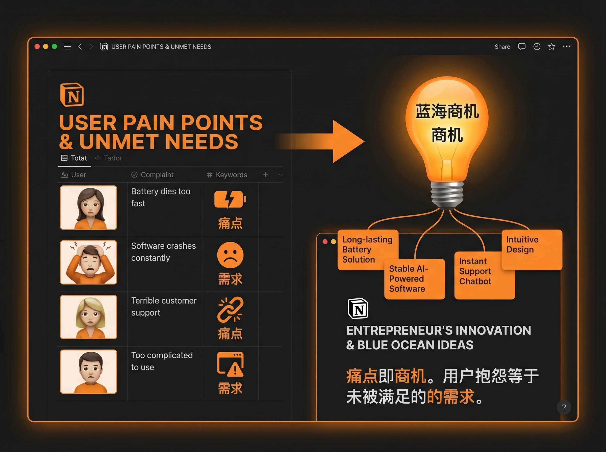
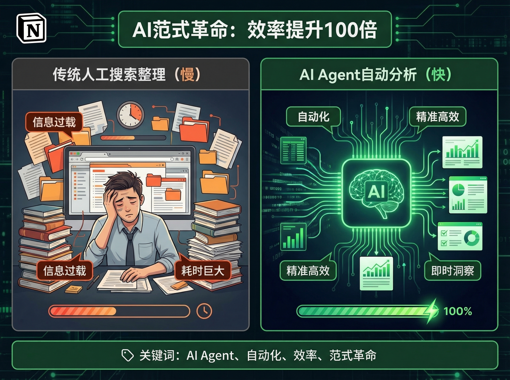
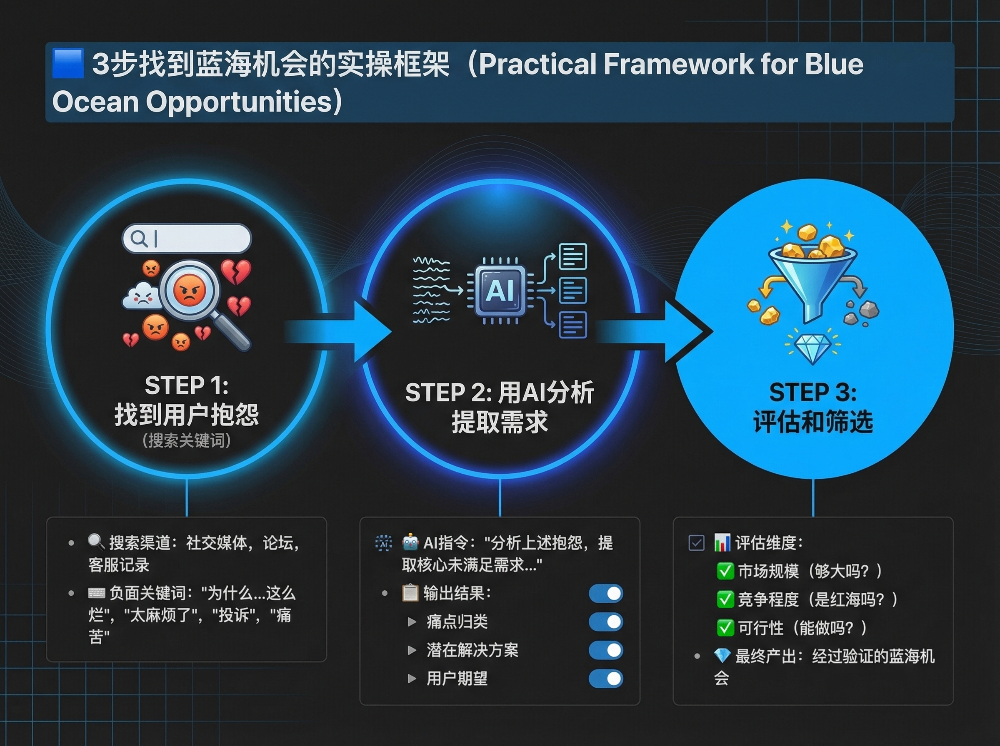
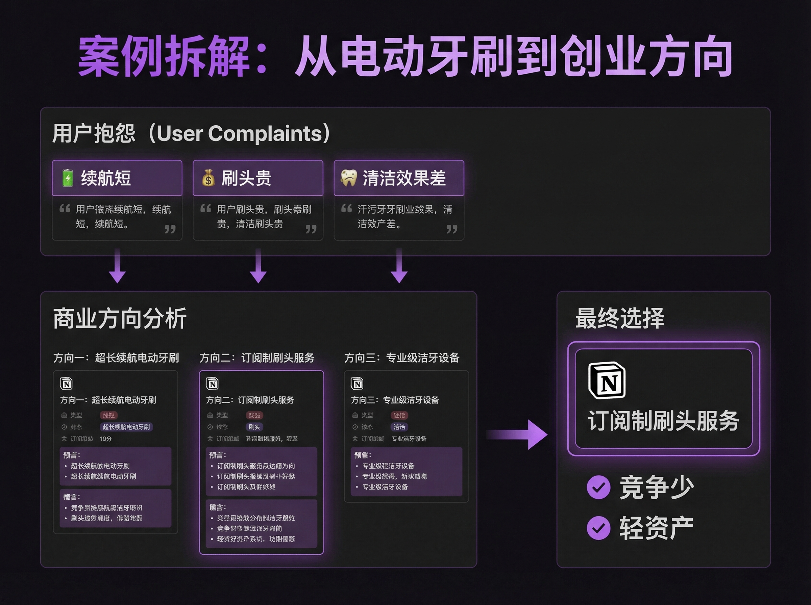
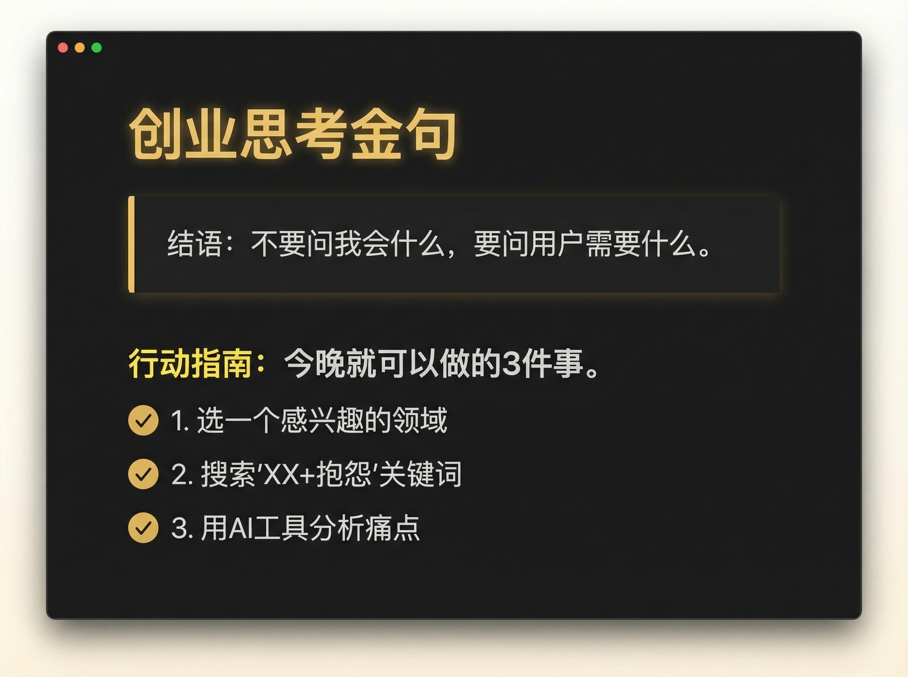

你想创业，但不知道做什么。
大多数人的做法是：想一想自己会什么，然后去找市场。
这个方法最大的问题是什么？
你在找"你能做的"，而不是"市场需要的"。
但如果我告诉你，有一个反直觉的方法，能帮你找到真正有市场需求的商业机会呢？
从用户的抱怨里找机会。
用 AI 工具批量搜索用户的抱怨，从中发现竞争少的蓝海市场。

为什么用户抱怨里藏着商业机会？
用户抱怨 = 未被满足的需求。
当一个人在网上抱怨某个产品时，他其实是在说："这个产品没有满足我的需求，如果有人能解决，我愿意付费。"
更反直觉的是，抱怨越多的地方，往往竞争越少。
因为大多数创业者喜欢追逐热点，喜欢"看起来很美"的赛道。那些用户抱怨多的领域，往往看起来"不性感"、"有争议"，所以竞争反而少。
举个例子。
假设你想在"电动牙刷"这个领域找机会。搜索"电动牙刷 抱怨"，你会发现：
每一个抱怨背后，都是未被满足的需求：
这些方向，可能没有"智能电动牙刷"听起来那么酷，但每一个都是真实存在的市场需求。
传统方式的问题是什么？效率太低。
手动搜索、整理、分析，1小时可能只能处理20-30条信息。

最近看到一个案例：用 OpenClaw（一个开源的 AI Agent 框架）构建了一个"商机发现 Agent"。
这个 Agent 能自动搜索社交媒体、评论、论坛中的用户抱怨，然后用 AI 分析这些抱怨，提取高频痛点，最后评估哪些痛点有商业价值。
效率至少提升了 100 倍。
原来需要人工花 1 天时间搜索整理的信息，AI 可以在几分钟内完成分析，而且覆盖面更广，更客观。
这带来的是一个范式革命：

即使你不使用 OpenClaw 这种复杂的工具，你也可以用 ChatGPT、Claude 等通用 AI 工具，构建一个简化版的"商机发现工作流"。
搜索关键词公式：产品名 + 抱怨/痛点/问题
数据来源包括：微博、小红书、知乎、淘宝差评、京东差评、豆瓣、贴吧。
技巧：
把收集到的评论（至少 50 条）喂给 AI，让它做以下分析：
请分析以下 50 条用户抱怨，帮我： 1. 总结出前 5 个高频痛点 2. 每个痛点的需求强度（高/中/低） 3. 这些痛点背后的真实需求是什么 4. 如果要解决这些痛点，可能的商业方向是什么
拿到 AI 的分析结果后，做 3 个维度的评估：
维度1：市场规模
维度2：竞争程度
维度3：个人能力匹配度
只有这 3 个维度都通过，才值得深入。

用一个具体案例，把整个流程演示一遍。
第1步：搜索"电动牙刷 抱怨"
打开小红书、知乎、淘宝差评，收集 100 条用户抱怨。
第2步：用 AI 分析
AI 输出高频痛点 Top 3：
1. 续航不足（需求强度：高）
- 可能方向：超长续航电动牙刷
2. 刷头太贵（需求强度：中）
- 可能方向：订阅制刷头服务
3. 清洁效果不佳（需求强度：高）
- 可能方向：专业级家用洁牙设备
第3步：评估和筛选
方向1：超长续航电动牙刷 - 竞争中等，可行但需差异化
方向2：订阅制刷头服务 - 竞争少，轻资产，适合创业
方向3：专业级家用洁牙设备 - 门槛太高，不适合个人
最终选择：方向2（订阅制刷头服务）
为什么？
"从用户痛点出发"这个思路本身并不新鲜。
但大多数人知道，却做不到。
因为有几个思维误区：
传统创业思路： 我会什么 → 做什么 → 找用户
新思路： 用户痛什么 → 学什么/找谁做 → 做什么
第一个思路的问题在于：你会的东西，市场可能不需要。
很多人喜欢研究成功案例："那个品牌是怎么做起来的？"
但成功案例往往是事后总结，有很多幸存者偏差。更重要的是，成功案例往往有时代红利、资源优势，你很难复制。
相比之下，用户痛点是真实存在的，是永恒的。
很多人创业的起点是："我认为用户需要这个。"
但问题是，"你认为"不重要，用户真的需要才重要。
看完这篇文章，不要只是"看懂了"，要真正去尝试。
今晚就可以做的 3 件事：
1. 选一个你感兴趣的领域
2. 搜索"XX + 抱怨"
3. 用 AI 分析
做完这 3 步，你可能会发现一些你从未想到的机会。

真正的机会不在你擅长什么，而在于用户需要什么。
AI 时代，找方向的能力比做方向的能力更重要。
因为一旦你找到了正确的方向，做起来就相对简单了。AI 工具可以帮你做产品、做营销、做运营。
但如果方向错了，再好的执行力也救不了你。
所以，从今天开始，改变你的思路：
不要问"我会什么"，要问"用户需要什么"。
本文作者：AI 创业者
关注我，了解更多 AI 创业实战经验